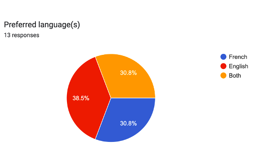
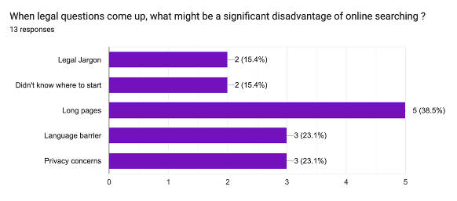
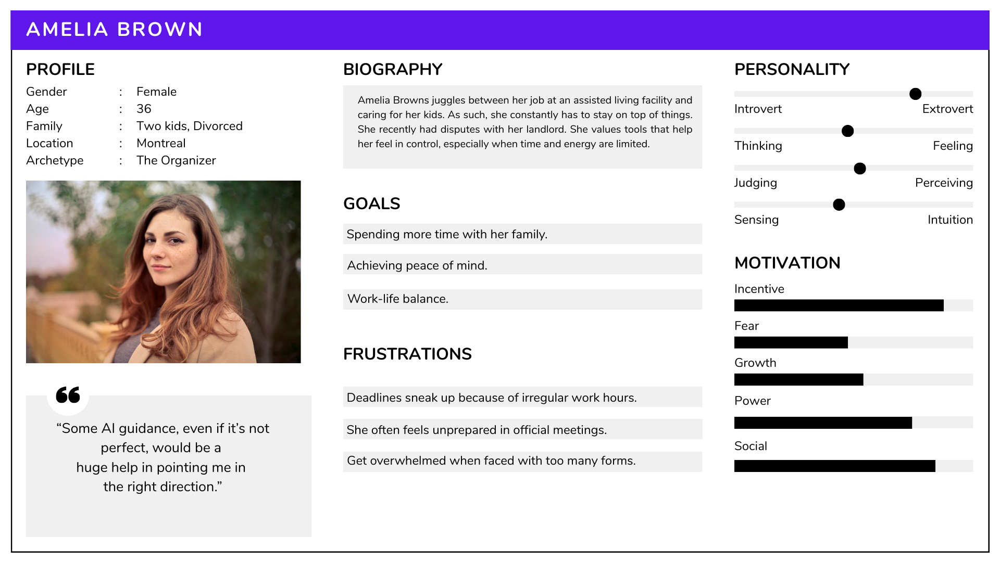
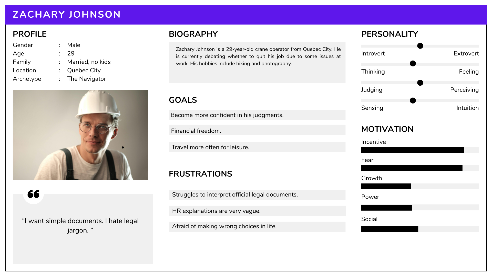
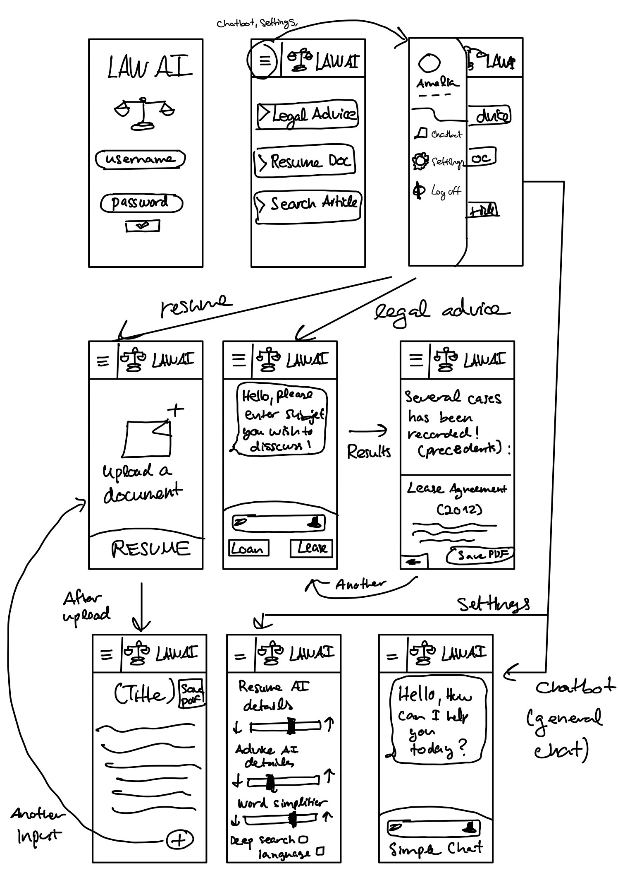
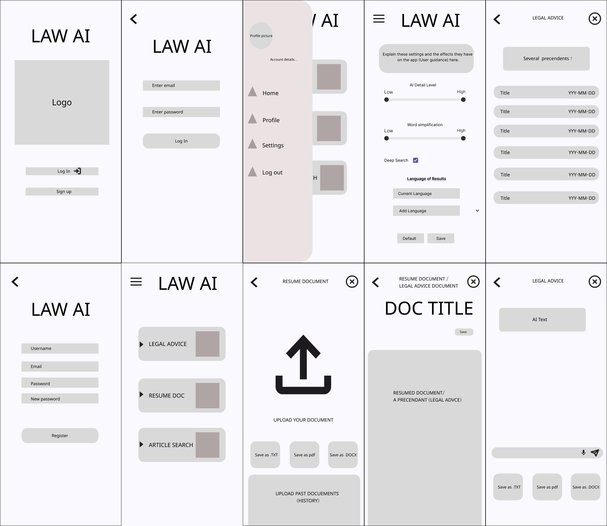
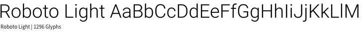
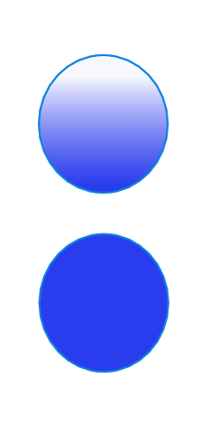

Protect Your Rights!
By Anass Taoussi
As new laws and regulations emerge, it has become increasingly important for individuals in the province of Quebec to understand their rights and how to protect them. After seeing countless videos of individuals being taken advantage of, people are realizing the importance of legal knowledge. Moreover, high-level officials around the world are being convicted of crimes, proving that no democratic country exists without accountability. This AI tool serves as an online assistant for individuals seeking to navigate the complex legal landscape.
The Research
Personal AI legal assistants are far from being mainstream, notably due to the sensitive nature of the legal field. However, there is a growing market for leveraging AI technologies to improve access to legal information, such as chatbots and virtual legal assistants.
I decided to conduct my research through a questionnaire. The main advantage of this method is the ability to reach a larger audience with ease. Since I am the sole researcher, this method is more practical and efficient. Once my sample size reached 13 participants, I analyzed the results and identified common patterns for the design of my AI tool.
The questionnaire was designed to provide insights into users' language preferences, the issues they face when researching legal information, and the most important feature they would like to see in the AI tool. The results were as follows:
1. Language Preference: A significant majority of respondents expressed a preference for using the AI tool in French (the remaining 3 preferred English). This indicates a need for bilingual support in the application.

2. Common Issues: Reading through legal documents is the most frequently reported issue when researching legal information. This showcases the importance of summarizing legal documents while ensuring the accuracy of information provided by the app.

The most important factors to take into account when designing my app are the readability of legal documents, language preference, and word simplicity.
User Personas
Amelia Brown is a very busy professional who juggles multiple responsibilities. Due to financial constraints, she recently had issues with her landlord regarding her lease agreement. She does not have significant knowledge of laws and regulations related to her situation. With everything going on in her personal and professional life, she feels extremely overwhelmed. As a clear starting point, the AI assistant can help her find relevant resources and documents to consult.

Zachary Johnson is a 29-year-old construction worker who has been facing challenges with his employer regarding workplace safety and labor rights. He is not well-versed in legal matters and is indecisive about how to proceed. The AI tool can provide him with simplified information about labor laws and his employment contract.

User Journeys
Zachary is primarily focused on efficiently summarizing his work contract and understanding his rights. He is dissatisfied with the limited export options in the app; he wants to save it as a .docx file for further editing. Adding different file formats for export could enhance the user experience. Another pain point for this user is the lack of clarity about how to generate another summary. I plan to facilitate this process by providing a more intuitive user interface.
Amelia seeks legal assistance to handle her lease agreement. Her main concern is the lack of guidance when searching for relevant legal information. The fact that she needed to tirelessly scroll through previous chat messages to find information frustrates her. To address this, I will implement a search feature that allows her to easily find and access the information she needs.
Application Concept
Sketches and Wireframes
I began by sketching the low-fidelity model of the app. I decided to use cards to represent its main features. On the "Resume document" page, I added a "+" button that allows users to upload another document. The "Legal Advice" frame is a simple chatbot that guides the user through the process of finding relevant legal information. Based on the research results, I also included a language selection dropdown at the bottom of the "Settings" frame.

In the case of the wireframes, I decided to add saving options for different file formats. This decision was largely due to the conclusions drawn from my research (i.e., user journeys).

Typography
For my application, I decided to use Roboto as the primary font, due to its modern and clean appearance. This font is also highly legible, making it suitable for reading legal documents. As for the headings and titles, I strategically made use of semi-bold and light weights to create a clear visual hierarchy.
Color Palette
I decided to use a color palette that combines shades of blue and white. Blue is associated with trust and professionalism, which are important qualities for a legal assistant application. The white background provides a clean and modern look.

Prototype Design
A search bar was added to the "Article Search" page, above the status of the search (which either displays the results or "no precedents found"). I added a warning message to inform users about the trade-off between word simplification and accuracy, as some legal terms may not have simpler alternatives.
The high-fidelity prototype screens are shown below. I decided to remove the closing "X" button because the back chevron is sufficient for navigation. Knowing that some respondents were worried about data privacy, I added the option for users to delete their data in the navigation drawer.
I also removed the "+" button in the "Resume document" frame, as the back chevron is sufficient for navigating to the previous interface to upload documents.
Final Thoughts
The UX design relied heavily on my research findings. The fact that the majority of respondents expressed their frustration with reading legal documents was a key insight that inspired me to include a document summarizer. Furthermore, I ensured the app allows users to navigate in their preferred language. For individuals looking for advice on legal matters, I ensured the UI is simple and straightforward. All things considered, this project was a great learning experience, and I had fun designing the application.